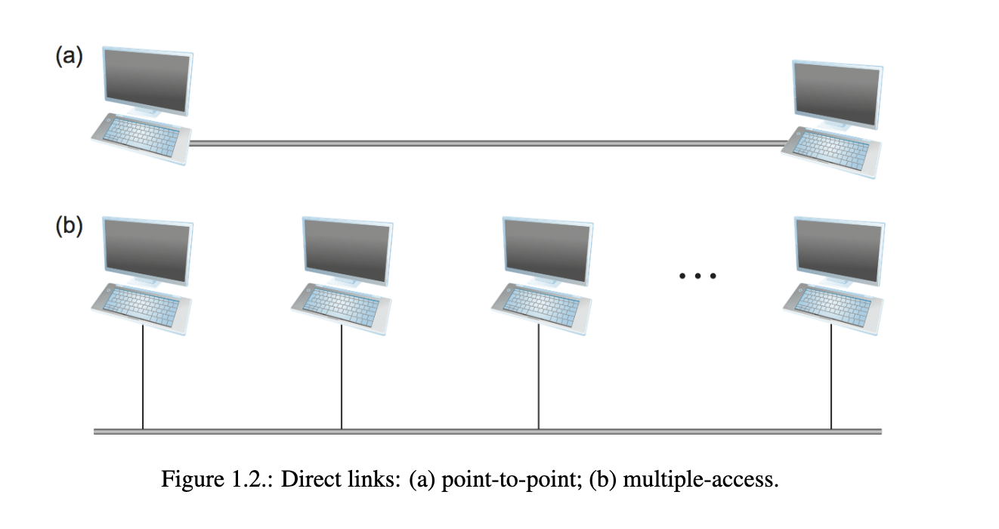
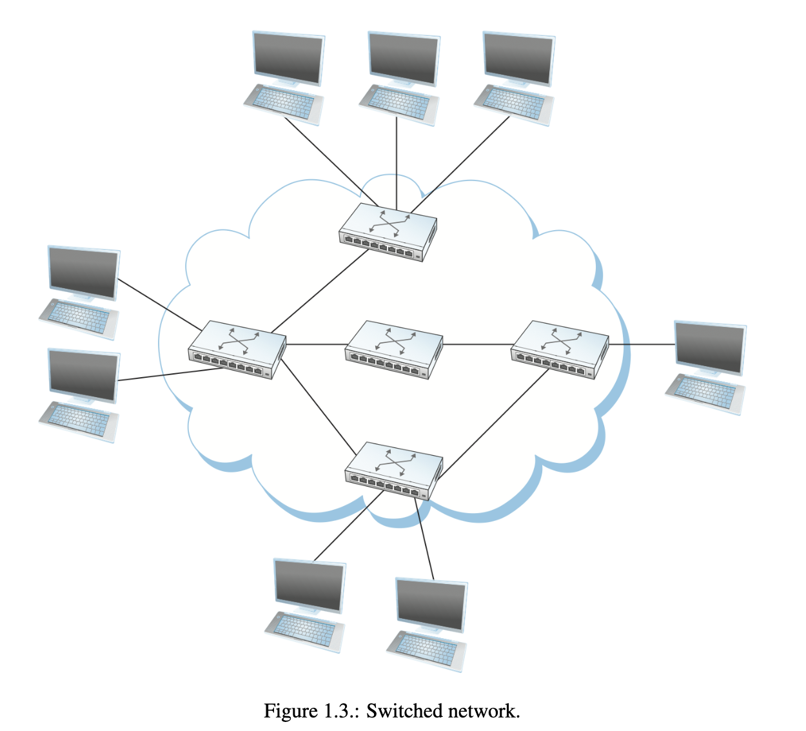

The goal of the book is to answer how to build a computer network to
grow and support diverse number of applications.
What is a computer network
At one time, network meant the set of serial lines used to attach
dumb terminals to mainframe computers.
There are other types of networks, like voice telephone networks and
cable TV networks to disseminate video signals.
All of these have one thing in common: They’re specialized to handle
one particular kind of data, and they connect to special purpose
devices.
The most important aspect of a computer network is it’s generality.
They’re built from general purpose programable hardware, and they’re
not optimized for particular applications.
Foundations - Applications
applications of networks
We use the internet through it’s applications: World Wide Web,
email, etc.
We are the Users of the network.
There are the people that create the
applications
The people that operate/manage networks. It’s a behind the scenes
job, but it’s critical and complex.
Finally, there are the people that design and build the devices and
protocols that make up the internet.
Classes of Applications
The World Wide Web is not the internet, but an internet
application.
The web is a simple interface:
The user view pages full of textual and graphical objects, and click
on objects they want to learn about. Pressing it will take you to a new
page.
Each object is bounded to an identifier for the next page or oject
to be used. This is known as a Uniform Resource Locator
(URL).
This is how the web identifies all objects that can be viewed.
http://www.cs.princeton.edu/llp/index.html
what’s happening with the url?
HTTP stands for Hypertext Trainsfer Protocol. This explains how to
download the page.
The webpage is served by a machine named www.cs.princeton.edu. the
location of the home page for larry is /llp/index.html
behind the scenes
In reality, clicking the URL is a little more complicated. Dozens of
messages can be exchanged over the internet.
up to 6 messages to translate the server name to it’s ip
address.
3 messages to set up a TCP (Transmission Control Protocol)
connection between the browser and the server.
4 messages to send the HTTP “get” request and the server responds
with the requested pages
Finally, 4 messages to tear up the TCP connection.
streaming
Unlike the previous example, we cannot download an entire video and
watch it. We need to, in a timely manner, transfer messages from the
sender to receiver.
Foundations - Requirements
The goals of a computer network depends on the person: user,
application developer, network operator and network designers have
different goals and requirements.
scalable connectivity
A computer network should provide connectivity among a set of
computers.
Sometimes, having a small network is enough, like privite corporate
machines limit the number of machines connected.
For bigger networks, like the internet, we want to be able to
grow in such a way that all computers in the world can connect.
Scale is the ability for a system to support growth to an
arbitrary size.
There are many ways computers are connected to a network:
At the lowest level, we can connect two computers wit ha physical
medium.
A physical medium is known as a link, and the computers as a
node.

Figure 1.2: Direct links: (a)
point-to-point (b) multiple access.
With point to point connections, physical links are limited to a
pair of nodes,
With shared connections, links are not limited to a pair of
nodes.
Wireless Links, like Wi-Fi, are important.
Multiple access links are limited in size, in terms of how much
they can connect.
If we were to link all computers physically, it’d be very
expensive, and impossible.
Connectivity between two nodes doesn’t necessarily mean a physical
connection between them, instead being many communicating nodes.

Figure 1.3: Switched
network.
Pictured is an example of a switched network. It’s more systematic
than just connecting them all together.
There are many types of switched networks. The two most common are:
Circuit switched: typically used from telephone systems.
It is making a comeback in optical networking.
Packet switched: Used for most computer networks.
The nodes in the network sends discrete blocks to data to each
other.